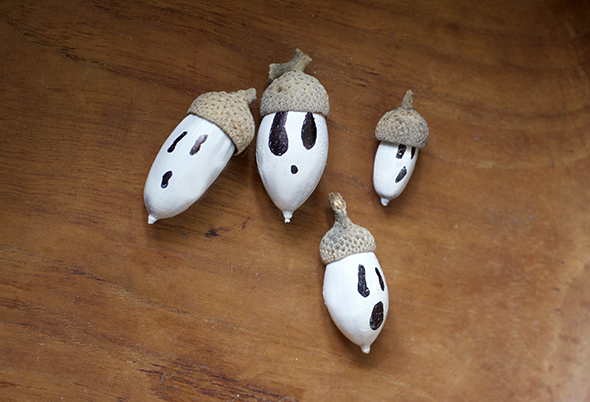
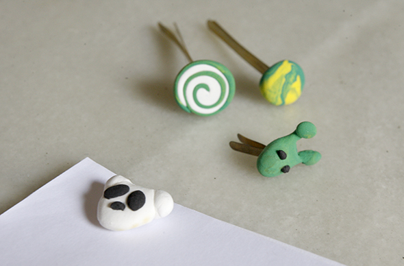

Pinterest
Instagram
ES
EN
DE
☰ Menú
Inicio
La casa
Accesorios
Decorar
Instrucciones
Ilustración
Cantimploras personalizadas
Cuaderno de manualidades y actividades 01
App Not Online Anymore
Blog
Fiestas
Navidad
Pascua
Halloween
Carnaval y disfraces
San Valentín
Cumpleaños
Día de la Madre/Padre
Vuelta al cole
Estaciones
Primavera
Verano
Otoño
Invierno
Qué hacer
Juguetes
Juegos
Imprimibles
Recetas y comida
Decoración
Pintar
Experimentos
Al aire libre
Aprender
Animales
Regalos y joyas
Construir y trucos
Otras manualidades
Material
Papel
Cartón
Rollos de papel
Reciclaje
Piedras
Hojas y naturaleza
Tela, coser y tejer
Inicio
›
Blog
Blog
Fiestas
Navidad
69
Pascua
43
Halloween
27
Carnaval y disfraces
36
San Valentín
15
Cumpleaños
13
Día de la Madre/Padre
4
Vuelta al cole
10
Estaciones
Primavera
19
Verano
42
Otoño
22
Invierno
32
Qué hacer
Juguetes
79
Juegos
125
Imprimibles
49
Recetas y comida
95
Decoración
97
Pintar
64
Experimentos
19
Al aire libre
64
Aprender
67
Animales
116
Regalos y joyas
91
Construir y trucos
81
Otras manualidades
53
Material
Papel
94
Cartón
61
Rollos de papel
23
Reciclaje
121
Piedras
33
Hojas y naturaleza
53
Tela, coser y tejer
42
Actividad
Relieve secreto con cola
Material
Cuadro de tangram jaspeado
Ocasión
Fantasmas de bellota

Inicio novedades
Nuestro lugar en el cosmos
Nuestro lugar en el cosmos
Material
5 proyectos sobre el cosmos
Actividad
Marcapáginas fácil de plastilina
Modelar
Clips decorados con plastilina

Comida
Ojos de plastilina para la fruta
Actividad
Joyas de plastilina
Material
Arte del paisaje
Lata
Botes cabeza de Lego
Ocasión
Guirnalda de conchas
Material
Piñata sencilla
Ocasión
Deseo de verano en una concha
Material
{ mustache }
Papel
Farolillo de pez
Actividad
Figuras de plastilina
Actividad
Medallones de Harry Potter
Comida
Minihelados en cubitera
Actividad
Dibujar con tinta
Juguete
Palo de lluvia
Material
Pulsera de hoja de palmera
Actividad
Colgante con tu mascota
← Más recientes
Página 7 / 40
Más antiguas →